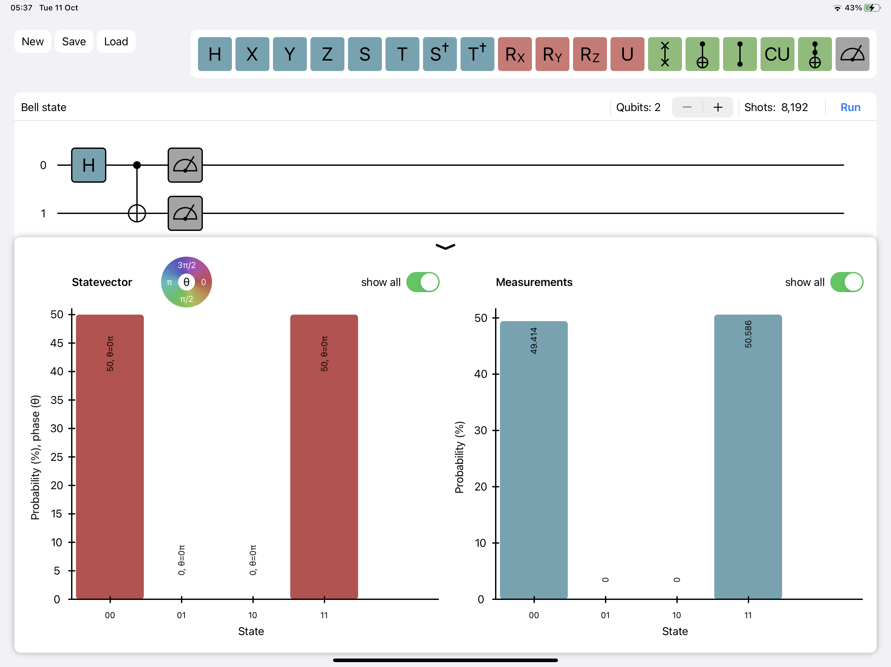
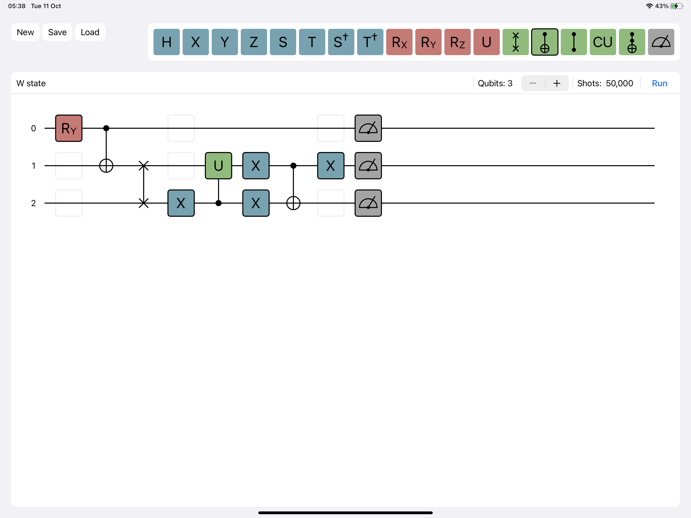
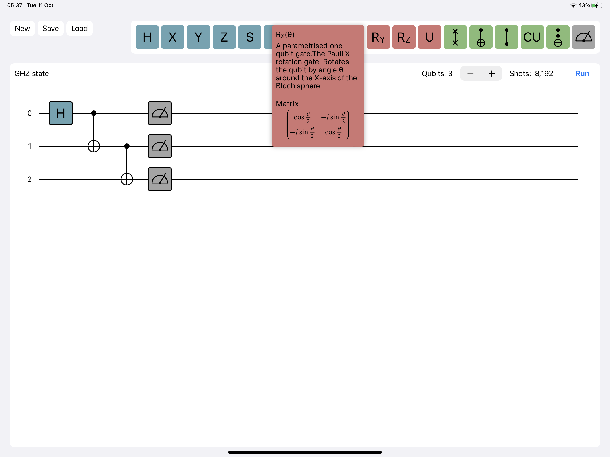
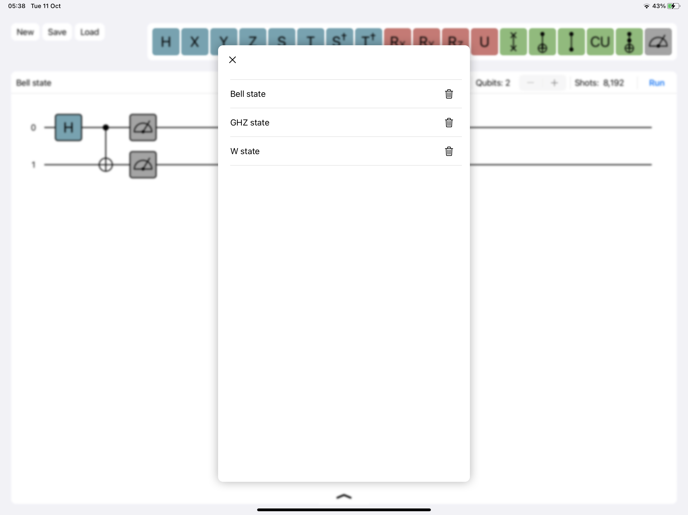

CirQuit
A quantum circuit builder. An intuitive graphical interface for building and simulating quantum circuits.
- Simply drag-and-drop gates from the selector to add to your circuit
- Hold a gate in the selector for extra information
- Load a preset quantum circuit to get started
- Extend your circuit up to 10 qubits and an unlimited number of gates
- Click "run" to simulate the quantum circuit directly on your iPad / Mac
- Visualise the quantum statevector and the results of simulated measurement
- Export circuit as jpg, png, or pdf
- Export circuit to latex, qiskit, cirq, or other
- Build and add custom gates
- Add simulation of errors and noise
Download on the iPad and Mac app store now!
Support
This app is a small project of my own. I plan to keep developing it to make it a useful tool for myself and as many people as possible. It is, and always will be, free to download and use. If you find it useful or would like to see certain new features, please consider a small donation to support the development of the app.
DonatePrivacy Policy
CirQuit app does not collect any data from you (the user).



